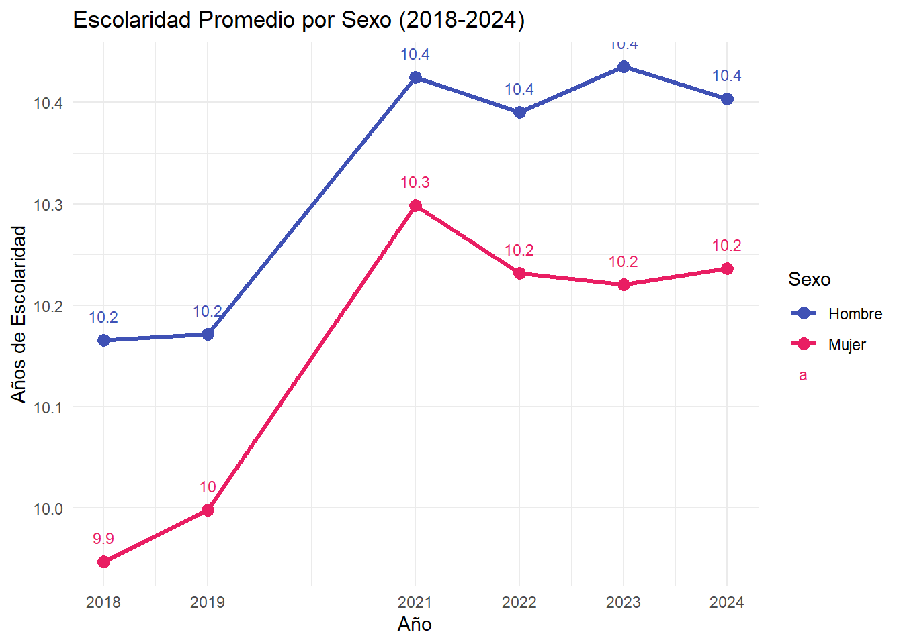
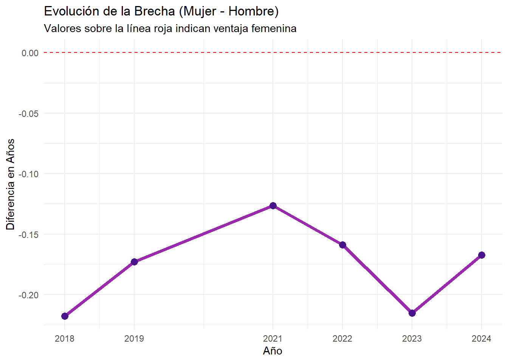
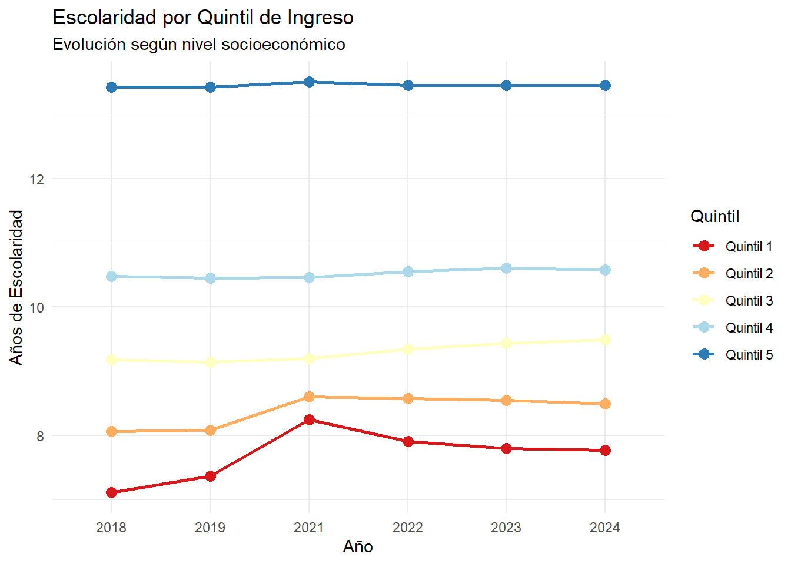

Code
# Verificar e instalar paquetes si es necesario
if (!require("tidyverse")) install.packages("tidyverse")
if (!require("readxl")) install.packages("readxl")
# Cargar las librerías
library(tidyverse)
library(readxl)
library(ggplot2)Mayari Tapia
December 31, 2024
Este análisis profundiza en la variable de “Años promedio de escolaridad” en Ecuador. El objetivo es doble: primero, identificar si existe una brecha de género persistente; y segundo, observar cómo el nivel socioeconómico (medido por quintiles de ingresos) condiciona el acceso y permanencia en el sistema educativo entre 2018 y 2024.
Fuente de datos: Tabulados anuales ENEMDU 2024 (INEC)
Periodo de estudio: 2018-2024
Variables analizadas: Años promedio de escolaridad, Sexo y Quintiles de Ingreso.
Herramientas: R, tidyverse y readxl.
# NOTA: Asegúrate de que el archivo esté en la carpeta de tu proyecto
df_educacion <- read_excel("C:/Users/Valen/Downloads/02 ENEMDU_Anual_2024_Tabulados_Educación.xlsx",
sheet = "3. Características",
range = "A9:N69") %>%
rename(Periodo = 1, Indicadores = 2)
# Filtrar solo el indicador de escolaridad para ambos análisis
df_escolaridad_base <- df_educacion %>%
filter(Indicadores == "Años promedio de escolaridad")¿Tienen las mujeres hoy en día más años de escolaridad que los hombres en promedio? Evaluamos la tendencia y la brecha neta.
# Preparar datos para la comparación
df_genero <- df_escolaridad_base %>%
select(Periodo, Hombre, Mujer) %>%
mutate(Brecha_M_H = Mujer - Hombre,
Periodo = as.integer(Periodo))
# Formato largo para el gráfico de líneas
df_genero_largo <- df_genero %>%
pivot_longer(cols = c(Hombre, Mujer), names_to = "Sexo", values_to = "Anos")# Gráfico 1: Comparativa de líneas
ggplot(df_genero_largo, aes(x = Periodo, y = Anos, color = Sexo)) +
geom_line(linewidth = 1.2) +
geom_point(size = 3) +
geom_text(aes(label = round(Anos, 1)), vjust = -1.5, size = 3) +
labs(title = "Escolaridad Promedio por Sexo (2018-2024)",
y = "Años de Escolaridad", x = "Año") +
scale_color_manual(values = c("Hombre" = "#3F51B5", "Mujer" = "#E91E63")) +
theme_minimal() +
scale_x_continuous(breaks = unique(df_genero_largo$Periodo))
# Gráfico 2: Brecha Neta
ggplot(df_genero, aes(x = Periodo, y = Brecha_M_H)) +
geom_line(color = "#9C27B0", linewidth = 1.5) +
geom_point(color = "#4A148C", size = 3) +
geom_hline(yintercept = 0, linetype = "dashed", color = "red") +
labs(title = "Evolución de la Brecha (Mujer - Hombre)",
subtitle = "Valores sobre la línea roja indican ventaja femenina",
y = "Diferencia en Años", x = "Año") +
theme_minimal() +
scale_x_continuous(breaks = unique(df_genero$Periodo))
Los datos muestran que la línea de la brecha se mantiene siempre por debajo de cero. Esto confirma que, en el periodo 2018-2024, los hombres en Ecuador mantienen consistentemente más años de escolaridad promedio que las mujeres.
Se observa un crecimiento en ambos sexos, pero la línea azul (Hombres) siempre se posiciona por encima de la rosa (Mujeres). El hombre llega a los 10.4 años mientras la mujer alcanza los 10.3 años en su punto más alto de ese periodo.
El año 2021 marca el momento de mayor cercanía entre ambos sexos, con una brecha que se redujo a su punto mínimo (-0.12 años). Sin embargo, hacia 2023 y 2024, la distancia volvió a ampliarse ligeramente, situándose cerca de los -0.17 años.
Aquí observamos la escolaridad según el nivel socioeconómico, desde el Quintil 1 (más bajo) al Quintil 5 (más alto).
columnas_quintiles <- c("Quintil 1", "Quintil 2", "Quintil 3", "Quintil 4", "Quintil 5")
df_quintiles <- df_escolaridad_base %>%
select(Periodo, all_of(columnas_quintiles)) %>%
pivot_longer(cols = all_of(columnas_quintiles), names_to = "Quintil", values_to = "Anos")
df_quintiles$Periodo <- as.factor(df_quintiles$Periodo)ggplot(df_quintiles, aes(x = Periodo, y = Anos, group = Quintil, color = Quintil)) +
geom_line(linewidth = 1) +
geom_point(size = 3) +
labs(title = "Escolaridad por Quintil de Ingreso",
subtitle = "Evolución según nivel socioeconómico",
y = "Años de Escolaridad", x = "Año") +
theme_minimal() +
scale_color_brewer(palette = "RdYlBu")
Existe una brecha masiva y constante de aproximadamente 5.5 años de escolaridad entre el Quintil 5 (el 20% más rico) y el Quintil 1 (el 20% más pobre). Mientras que el Quintil 5 supera los 13 años (educación superior), el Quintil 1 no logra alcanzar los 8 años (educación básica incompleta).
El Quintil 5 muestra una línea casi plana, lo que sugiere que este grupo ya alcanzó un techo de escolaridad estable. Por el contrario, el Quintil 1, tras un breve incremento en 2021 (8.2 años), ha mostrado un ligero retroceso o estancamiento, cerrando el 2024 en 7.8 años.
Los Quintiles 3 y 4 (clase media y media-alta) son los únicos que muestran una tendencia de crecimiento sostenido y paralelo, alejándose lentamente de los quintiles más bajos.
---
title: "Escolaridad en Ecuador: Brechas de Género y Nivel Socioeconómico"
author: "Mayari Tapia"
date: "2025"
image: "grafico_escolaridad.png" # Para la miniatura de la galería
description: "Un análisis de los años promedio de escolaridad comparando género y niveles de ingreso (2018-2024)."
categories: [R, Género, Economía, Ciencias Sociales]
format:
html:
code-fold: true # Permite ocultar/mostrar el código con un clic
code-tools: true # Agrega un menú para ver el código fuente completo
toc: true # Tabla de contenidos lateral
toc-depth: 3
code-copy: true
highlight-style: ayu
---
## Contexto del Estudio
Este análisis profundiza en la variable de "Años promedio de escolaridad" en Ecuador. El objetivo es doble: primero, identificar si existe una brecha de género persistente; y segundo, observar cómo el nivel socioeconómico (medido por quintiles de ingresos) condiciona el acceso y permanencia en el sistema educativo entre 2018 y 2024.
#### Metodología
Fuente de datos: Tabulados anuales ENEMDU 2024 (INEC)
Periodo de estudio: 2018-2024
Variables analizadas: Años promedio de escolaridad, Sexo y Quintiles de Ingreso.
Herramientas: R, tidyverse y readxl.
##### 1. Instalación y Carga de Paquetes
```{r}
#| message: false
#| warning: false
# Verificar e instalar paquetes si es necesario
if (!require("tidyverse")) install.packages("tidyverse")
if (!require("readxl")) install.packages("readxl")
# Cargar las librerías
library(tidyverse)
library(readxl)
library(ggplot2)
```
##### 2. Carga de Datos y Limpieza Inicial
```{r}
#| message: false
# NOTA: Asegúrate de que el archivo esté en la carpeta de tu proyecto
df_educacion <- read_excel("C:/Users/Valen/Downloads/02 ENEMDU_Anual_2024_Tabulados_Educación.xlsx",
sheet = "3. Características",
range = "A9:N69") %>%
rename(Periodo = 1, Indicadores = 2)
# Filtrar solo el indicador de escolaridad para ambos análisis
df_escolaridad_base <- df_educacion %>%
filter(Indicadores == "Años promedio de escolaridad")
```
#### 1er Análisis: Disparidad de Género
¿Tienen las mujeres hoy en día más años de escolaridad que los hombres en promedio? Evaluamos la tendencia y la brecha neta.
##### 3. Preparación de Datos de Género
```{r}
# Preparar datos para la comparación
df_genero <- df_escolaridad_base %>%
select(Periodo, Hombre, Mujer) %>%
mutate(Brecha_M_H = Mujer - Hombre,
Periodo = as.integer(Periodo))
# Formato largo para el gráfico de líneas
df_genero_largo <- df_genero %>%
pivot_longer(cols = c(Hombre, Mujer), names_to = "Sexo", values_to = "Anos")
```
##### 4. Visualización de la Brecha de Género
```{r}
# Gráfico 1: Comparativa de líneas
ggplot(df_genero_largo, aes(x = Periodo, y = Anos, color = Sexo)) +
geom_line(linewidth = 1.2) +
geom_point(size = 3) +
geom_text(aes(label = round(Anos, 1)), vjust = -1.5, size = 3) +
labs(title = "Escolaridad Promedio por Sexo (2018-2024)",
y = "Años de Escolaridad", x = "Año") +
scale_color_manual(values = c("Hombre" = "#3F51B5", "Mujer" = "#E91E63")) +
theme_minimal() +
scale_x_continuous(breaks = unique(df_genero_largo$Periodo))
```
```{r}
# Gráfico 2: Brecha Neta
ggplot(df_genero, aes(x = Periodo, y = Brecha_M_H)) +
geom_line(color = "#9C27B0", linewidth = 1.5) +
geom_point(color = "#4A148C", size = 3) +
geom_hline(yintercept = 0, linetype = "dashed", color = "red") +
labs(title = "Evolución de la Brecha (Mujer - Hombre)",
subtitle = "Valores sobre la línea roja indican ventaja femenina",
y = "Diferencia en Años", x = "Año") +
theme_minimal() +
scale_x_continuous(breaks = unique(df_genero$Periodo))
```
#### 5. Algunos análisis
- Los datos muestran que la línea de la brecha se mantiene siempre por debajo de cero. Esto confirma que, en el periodo 2018-2024, los hombres en Ecuador mantienen consistentemente más años de escolaridad promedio que las mujeres.
- Se observa un crecimiento en ambos sexos, pero la línea azul (Hombres) siempre se posiciona por encima de la rosa (Mujeres). El hombre llega a los 10.4 años mientras la mujer alcanza los 10.3 años en su punto más alto de ese periodo.
- El año 2021 marca el momento de mayor cercanía entre ambos sexos, con una brecha que se redujo a su punto mínimo (-0.12 años). Sin embargo, hacia 2023 y 2024, la distancia volvió a ampliarse ligeramente, situándose cerca de los -0.17 años.
#### 2do Análisis: Disparidad por Quintil de Ingresos
Aquí observamos la escolaridad según el nivel socioeconómico, desde el Quintil 1 (más bajo) al Quintil 5 (más alto).
##### 6. Preparación de Datos de Quintiles
```{r}
columnas_quintiles <- c("Quintil 1", "Quintil 2", "Quintil 3", "Quintil 4", "Quintil 5")
df_quintiles <- df_escolaridad_base %>%
select(Periodo, all_of(columnas_quintiles)) %>%
pivot_longer(cols = all_of(columnas_quintiles), names_to = "Quintil", values_to = "Anos")
df_quintiles$Periodo <- as.factor(df_quintiles$Periodo)
```
##### 7. Visualización por Nivel Socioeconómico
```{r}
ggplot(df_quintiles, aes(x = Periodo, y = Anos, group = Quintil, color = Quintil)) +
geom_line(linewidth = 1) +
geom_point(size = 3) +
labs(title = "Escolaridad por Quintil de Ingreso",
subtitle = "Evolución según nivel socioeconómico",
y = "Años de Escolaridad", x = "Año") +
theme_minimal() +
scale_color_brewer(palette = "RdYlBu")
```
#### 8. Algunos análisis
- Existe una brecha masiva y constante de aproximadamente 5.5 años de escolaridad entre el Quintil 5 (el 20% más rico) y el Quintil 1 (el 20% más pobre). Mientras que el Quintil 5 supera los 13 años (educación superior), el Quintil 1 no logra alcanzar los 8 años (educación básica incompleta).
- El Quintil 5 muestra una línea casi plana, lo que sugiere que este grupo ya alcanzó un techo de escolaridad estable. Por el contrario, el Quintil 1, tras un breve incremento en 2021 (8.2 años), ha mostrado un ligero retroceso o estancamiento, cerrando el 2024 en 7.8 años.
- Los Quintiles 3 y 4 (clase media y media-alta) son los únicos que muestran una tendencia de crecimiento sostenido y paralelo, alejándose lentamente de los quintiles más bajos.